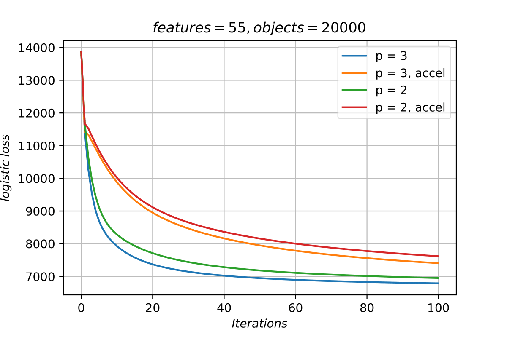
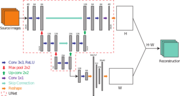
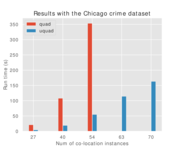
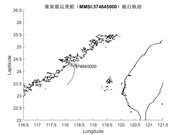

Hi there! I am a second-year CS master student at University of Minnesota - Twin Cities, under the supervision of Prof. Ju Sun.
My research interests lie primarily at the intersection of machine learning and optimization, both in theory and practice. Currently, I am working on the performance and stability of faster higher-order methods (tensor methods) for both convex and nonconvex optimization, mainly inspired by the work of Prof. Yurii Nesterov.
Before I came to UMN, I obtained my bachelor's degree in Electrical Engineering at Wuhan University.
|  |
Tensor Methods in Unconstrained Convex Optimization
Master thesis, ongoing
The ultimate goal of this project is to discover the stability of higher-order methods, whether they could be powerful in different scenarios. Currently, I have implemented the cubic regularization of Newton's method, which is a second-order method. On that basis, I also implemented the tensor methods (for the third-order case) proposed in this paper, and assessed the perfomance on different problems. In practice, the third-order method is superior to the second-order method. |
|  |
GAN-UNET: Non-negative Matrix Factorization Using Deep Neural Networks
Deep Learning Course Project, Spring 2020
This project introduced an end-to-end deep neural network framework GAN-UNET for nonnegative matrix factorization (NMF). We tested our model on different datasets to assess the performance in terms of reconstruction error, compared with many other classic algorithms. We also discussed the ability of symmetry breaking of our model from a perspective of inverse prblems. [Report] |
|  |
Regional Co-location Pattern Detection
Spatial Data Science Course Project, Spring 2020
In this project, we extended the algorithms proposed in this paper. For the sake of completeness and effiency, we introduced a new algorithm called Unique Quadruplet Enumeration algorithm, which outperforms our baseline significantly in experimentation with both synthetic data and a real world crime. We also introduced a number of new pruning metrics that lay the ground work to developing even better algorithms in future. [Report] |
|  |
Assistant Decision-making System of Maritime Search and Rescue
National Undergraduate Innovation and Entrepreneurship Training Program, Summer 2017
In this project, we presented a new algorithm based on 2-D spatial grid interpolation to locate the drowning people with real-time radar data. We simulated the algorithm and plotted the trajectory in MatLab. Besides, we also developed a website in PHP to demonstrate the trajectory of people using BaiduMap API. [Paper (in Chinese)] |
Copyright © 2020 Sihan Wei.